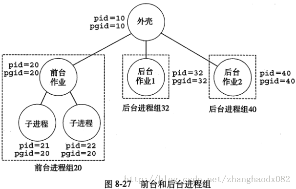
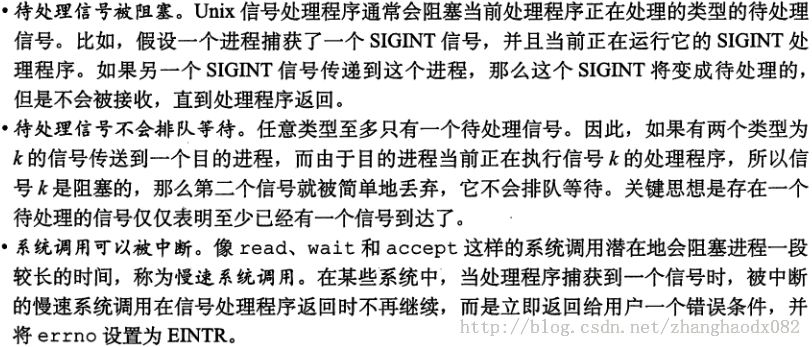

第八章 异常控制流(8.5信号)
一种更高层次的软件形式的异常，称为unix信号，它允许进程中断其他进程。
低层的硬件异常是由内核异常处理程序处理的，正常情况下，对用户进程而言是不可见的。信号提供了一种机制，通知用户进程发生了这些异常。
8.5.2发送信号
进程组：每个进程都只属于一个进程组，进程组是由一个进程组ID来标识的。默认的，一个子进程和它的父进程同属于一个进程组。 在任何时刻，至多只有一个前台作业和0个或多个后台作业。外壳为每个作业创建一个独立的进程组，一个作业对应一个进程组。

8.5.3接收信号
进程可以通过使用signal函数来修改和信号相关的默认行为。唯一的例外是SIGSTOP和SIGKILL，它们的默认行为不能被修改。
8.5.4信号处理问题
当一个程序捕获多个信号时，容易有一些细问问题：

第九章 虚拟存储器（9.1~9.5）
需要知道:
- 虚拟存储器是硬件异常,硬件地址翻译,主存和磁盘文件,内核软件的完美交互
- 为每一个进程提供一个大的,一致的和私有的地址空间
- 将主存作为磁盘地址空间的高速缓存
- 保护每个进程的地址空间不被其他进程破坏
虚拟存储器遍布在计算机系统所有层次,硬件异常,汇编器,链接器,加载器,共享对象,文件和进程中扮演重要角色
虚拟存储器是危险的:
引用变量,间接引用指针,调用malloc动态分配程序,就会和虚拟存储器交互
如果使用不当,将遇到危险复杂的与存储器有关的错误:段错误,保护错误
物理寻址:
计算机主存被组成为m个连续的字节大小的单元数组,每个字节地址叫做物理地址;
cpu访问存储器最自然方式是使用物理地址,该方式成为物理寻址
虚拟寻址
cpu生成一个虚拟地址,来访问主存
地址翻译
将虚拟地址转为物理地址就叫做地址翻译
地址翻译需要cpu和操作系统之间的合作
主要利用储存在主存中的查询表来动态翻译虚拟地址 查询表则由操作系统进行管理
地址空间
地址空间就是一个非负整数地址的有序集合
如果地址空间中整数连续,则成为线性地址空间
一个地址空间大小由表示最大地址需要的位数来描述
虚拟地址空间就是在一个带虚拟存储器的系统中,cpu从一个有N=2^n个地址的地址空间中生成虚拟地址,这个地址空间成为虚拟地址空间
那当然也有物理地址空间,与系统中物理存储器的M=2^m个字节对应